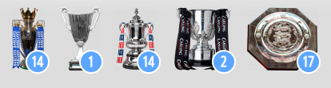

Арсенал Лондон
«Арсенал» — это легендарный английский профессиональный футбольный клуб из Северного Лондона.
Выступает в Премьер-лиге — высшем дивизионе системы футбольных лиг Англии.
Достижения арсенала
- Чемпион Англии (Премьер-лига) — 13 раз. Среди сезонов — 2003/04 (беспроигрышный сезон, известный как «непобедимый» или «The Invincibles»), 2001/02, 1997/98, 1990/91, 1988/89 и другие.
- Обладатель Кубка Англии (FA Cup) — 14 раз. Рекорд по количеству побед в этом турнире.
- Обладатель Кубка Английской футбольной лиги (League Cup) — 2 раза.
- Обладатель Суперкубка Англии — 16 раз.
- Финалист Лиги чемпионов УЕФА — 1 раз (2005/06).
